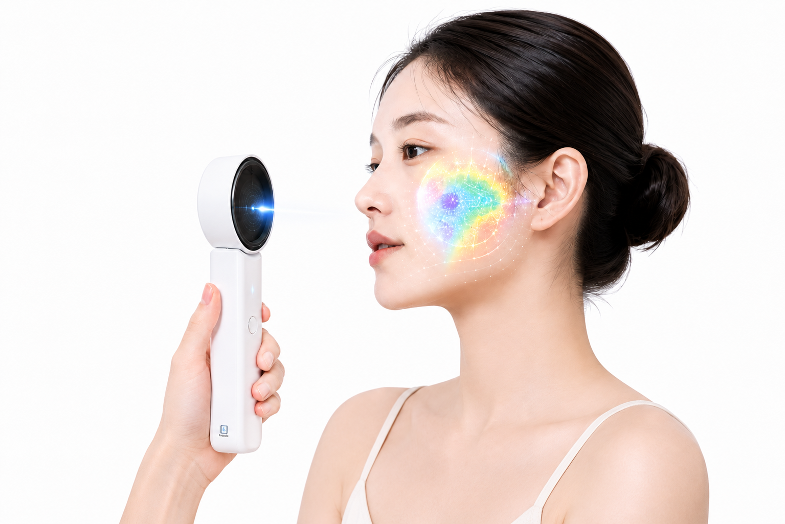
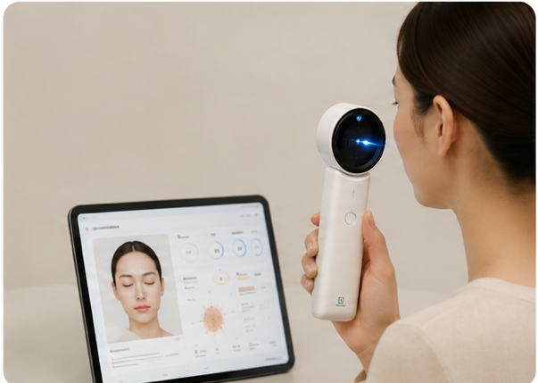

Partners & Clients

비접촉 방식으로 피부 상태를 정밀 측정하고,
축적된 데이터로 신뢰할 수 있는 진단 결과를 제공합니다




비접촉 광학 센서로 수분·유분·탄력 등 피부 상태를 정량 데이터로 측정합니다. 측정값은 맞춤형 스킨케어 추천과 화장품 R&D 개발 데이터로 이어져, 피부샵·클리닉·화장품 소매점과 스킨케어 브랜드(B2B), 홈케어 디바이스 사용자(B2C) 모두에게 근거 기반 데이터를 제공합니다.
자세히 보기 →